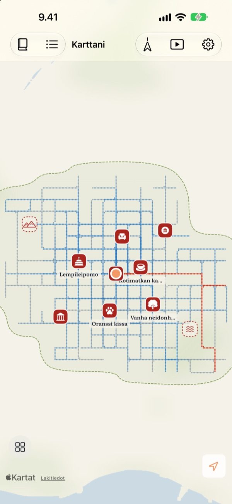
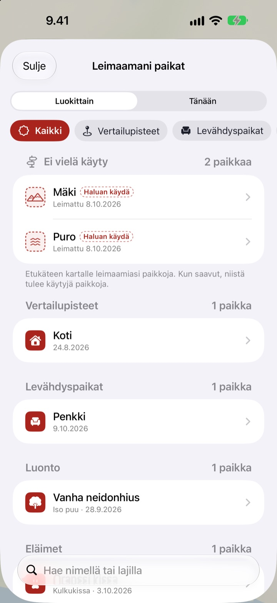
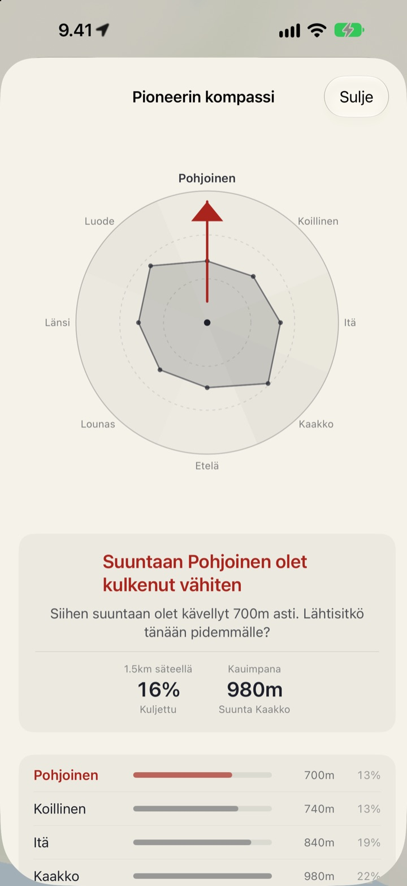
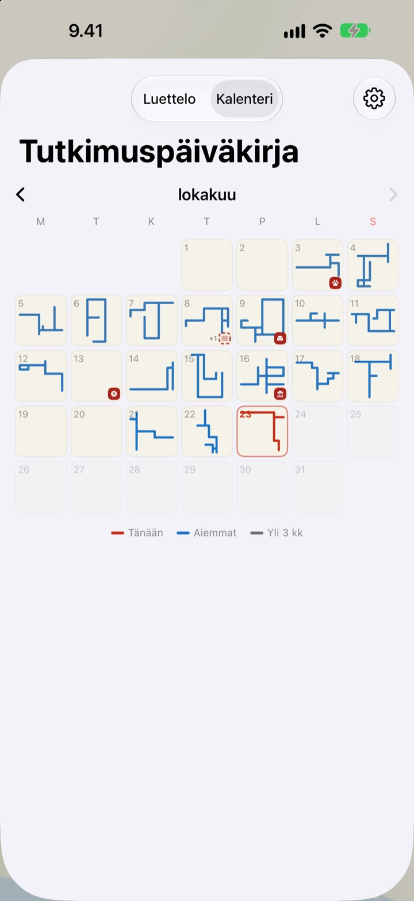

Kartta, joka täyttyy
vain kävellen
Se alkaa tyhjänä paperiarkkina. Vain kävelemäsi paikat täyttyvät, piste kerrallaan, eikä sama katu sataan kertaan käveltynä levennä sitä. Jos haluat kartan kasvavan, valitse uusi reitti.
Kaikki ominaisuudet ovat ilmaisia, eikä mainoksia ole.

Lähde kävelylle
Kävele vetämällä sormella tai hiirellä paperin yli. Siniset pisteet ovat katuja, joilla olet kävellyt aiemmin. Katso, miten Tämän päivän tie muuttuu, kun kuljet vanhoja jälkiä pitkin ja kun suuntaat jonnekin uuteen.
Kävelätkö samoja katuja joka päivä?
Askelmittari laskee askeleet, mutta ei koskaan kysy, minne ne veivät. Kotoa asemalle ja takaisin riittää täyttämään renkaan, joten viereinen sivukatu jää arvoitukseksi vuosiksi. Buktu Buktu laskee vain tiet, jotka kävelet ensimmäistä kertaa, ja antaa syyn poiketa tänään korttelin verran sivuun.
Leimaa paikat, joissa olet käynyt ja minne haluat
Leimaa paikka, jossa seisot, tai paina pitkään missä tahansa kartalla. Valittavana on 212 leimaa luokkiin lajiteltuina.
Leima paikassa, jossa et ole koskaan kävellyt, jää käyntikohteeksi ja muuttuu käydyksi paikaksi, kun todella pääset perille. Ota kuva kaupan kyltistä, niin tausta leikataan pois ja kyltti nousee pystyyn tarrana juuri siihen paikkaan.

Seuraava kävely: suunta, jossa olet kulkenut vähiten
Pioneerin kompassi jakaa ympäristösi kahdeksaan suuntaan ja osoittaa sen, jossa olet kulkenut vähiten.
Päivän jalanjäljet listaa tänään pysähtymäsi paikat järjestyksessä ja kertoo, kuinka pitkän matkan kävelit niiden välillä.

Jokainen päivä jättää muodon
Kalenteri piirtää numeron sijaan kunkin päivän kävelyn muodon. Pidä päiväkirjaa tekstillä ja kuvilla ja näe, kuinka suuri osa kustakin kävelystä kulki uusilla seuduilla.
Valitse jakso ja katso videona, jonka voit viedä, miten karttasi piirtyy.

Kolme askelta alkuun
- 1
Avaa appi
Tyhjä paperiarkki levittyy eteesi.
- 2
Salli sijainti
Valitse Aina ja laita Liike ja kunto päälle, niin kävelyt tallentuvat avaamatta appia.
- 3
Lähde liikkeelle
Mitä vieraampi katu, sitä enemmän kartta kasvaa.
Näin luet karttaa
- Punaiset pisteet
- missä kävelit tänään
- Indigonsiniset pisteet
- aiemmat askeleet, tummempia siellä, missä kuljet useimmin
- Harmaat pisteet
- paikat, joihin et ole palannut yli kolmeen kuukauteen. Ne haalistuvat mutta eivät koskaan katoa
- Katkoviivaleima
- käyntikohde. Siitä tulee käyty, kun pääset perille
- Piirtämäni tiet
- kaikkien ensimmäistä kertaa kävelemiesi teiden yhteispituus
- Tämän päivän tie
- kuinka suuri osa tämän päivän kävelystä oli uutta
- Näytä kaikki yhdessä
- Asetuksissa, avaa Pioneerin kompassin, Päivän jalanjäljet ja kartan piirtymisfilmin
Valittavana on tussikartta tai Kuvakartta.
Kaikki ominaisuudet ilmaiseksi
Ilmainen
- Kartta, joka täyttyy vain siellä, missä kävelet, ja uusien teiden seuranta
- 212 leimaa ja kylttitarrat
- Pioneerin kompassi ja Päivän jalanjäljet
- Kalenteri ja päiväkirja tekstillä ja kuvilla
- Video kartan piirtymisestä vietäväksi
- Widgetit Koti-valikkoon ja lukitusnäytölle
- iCloud-synkronointi laitteiden välillä
Tue kehittäjää
- Voit halutessasi lähettää pienen tipin Asetuksista
- Tippi ei avaa mitään. Appi on sama joka tapauksessa
Ei mainoksia, ei tilausta.
Kysymyksiä
Kävelin, mutta kartalle ei tullut mitään.
Avaa Asetukset > Buktu Buktu > Sijainti, valitse Aina ja laita Liike ja kunto päälle. Silloin tallennus toimii, vaikka appi olisi suljettu. Jos valitsit apin asetuksista akkua säästävän tallennustavan, avaa appi ennen kuin lähdet. Epätarkat sijainnit tallennetaan, mutta niitä ei piirretä.
Tallentuvatko auto- tai metromatkat?
Eivät. Appi piirtää liiketietojen ja nopeuden perusteella vain kävelyn ja juoksun ja jättää pois osuudet, jotka näyttävät ajoneuvolla kuljetuilta. Joskus se voi erehtyä.
Kävelen joka päivä samaa reittiä, eikä kartta kasva.
Niin sääntö menee. Kaikki 30 m:n säteellä jo kävellyistä paikoista lasketaan samaksi tieksi, joten Piirtämäni tiet kasvaa vain ensimmäistä kertaa kävellyistä teistä. Myös kadun toisen puolen jalkakäytävä lasketaan samaksi tieksi. Pioneerin kompassi näyttää, missä olet kävellyt vähiten.
Lähetetäänkö sijaintini jonnekin?
Ei kehittäjälle. Askeleesi, leimasi, päiväkirjasi ja kuvasi pysyvät laitteellasi ja omassa yksityisessä iCloudissasi, eikä kehittäjä näe niitä. Anonyymit käyttötilastot eivät koskaan sisällä koordinaatteja, päiväkirjan tekstiä, paikannimiä tai kuvia. Koordinaattien muuttamiseen paikannimiksi käytetään Apple Karttoja. Lisätietoja on alla olevassa tietosuojakäytännössä.
Siirtyvätkö tallenteeni uuteen laitteeseen?
Kyllä. Kirjaudu uudella laitteella samalla Apple-tilillä ja pidä iCloud päällä, niin askeleet, leimat, päiväkirja ja kuvat tulevat mukanasi.
Miten poistan leiman tai kuvan?
Poista leimat Leimaamani paikat -luettelosta, ja poista päiväkirjan kuva painamalla sitä pitkään. Tapa poistaa kaikki tiet ja päiväkirjamerkinnät kerralla on suunnitelmissa.
Miten lisään widgetin?
Paina Koti-valikkoa pitkään, napauta Muokkaa > Lisää widget ja valitse Buktu Buktu. Lukitusnäytöllä paina näyttöä pitkään ja napauta Muokkaa. Koti-valikon widget näyttää tämän päivän tien muodon ja pituuden, lukitusnäyttö päivän matkan.
Mitä tarvitsen?
iPhonen, jossa on iOS 17.0 tai uudempi.
Miten saan yhteyden?
Lähetä palautetta apin asetuksista tai kirjoita meille alla olevaan osoitteeseen. Vastaamme niin pian kuin voimme.
Kysyttävää tai palautetta? Kirjoita osoitteeseen leeo@kakao.com.